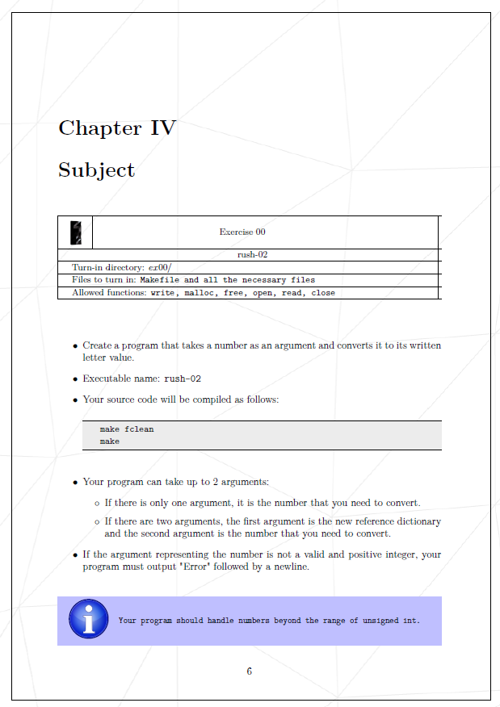
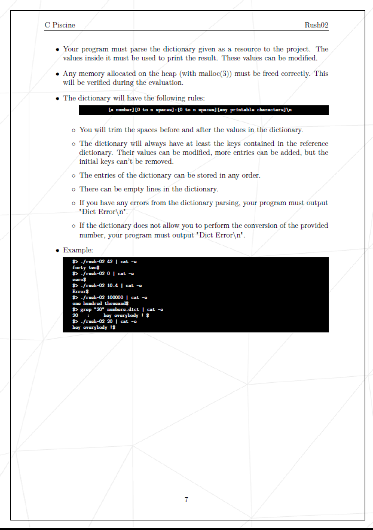
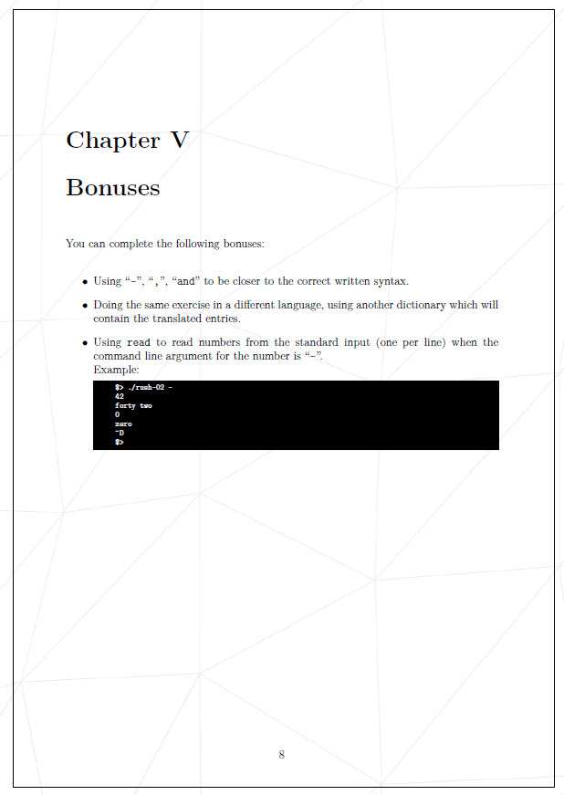

認識のすり合わせを行うために、課題の概要を簡単に説明します。
まずは課題で要求されていることを確認します。英語版の方が内容が正確で確認しやすいため、英語版を参照します。

まずは，課題で提出する必要がある項目を確認します。
次に，課題で要求されている要件を確認します。
プログラムは、引数の数に応じて異なる動作をする必要があります。

辞書ファイルは、key(数値)とvalue(その数値に対応した文字列) のペアで構成されている必要があります。数値と文字列はスペースで区切られており、各ペアは改行で区切られています。例えば、以下のような形式になります。
0 : zero 1 : one 2 : two ...
この形式に従っていない場合、プログラムは'Dict Error\n'を表示する必要があります。
辞書をparsing(解析)する際には、各行を読み取り、キーと値のペアが正しい形式であることを確認する必要があります。
書式がルールに従っていなければ，'Dict Error\n'にする必要があります。
オリジナルで辞書のvalueは，任意に変更可能ですが、keyは少なくともsubjectと一緒に与えられたオリジナルの辞書の内容を保持しているものとします．

ボーナス問題は出力の形式を整えたり，多言語に対応させたり，辞書リスト一覧を表示することが求められます。
ここまで対応させるかは進捗状況に応じて判断します．